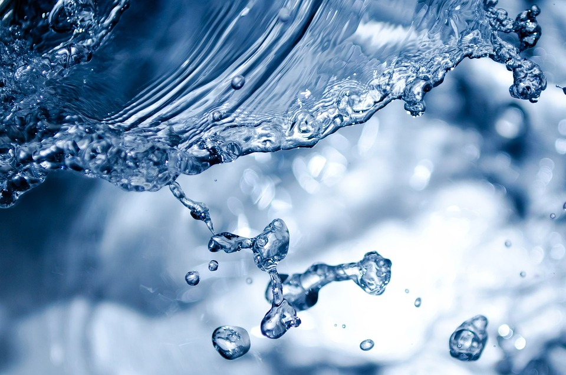
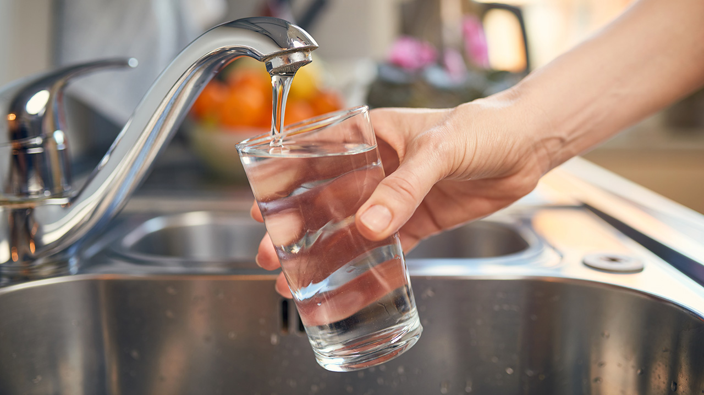
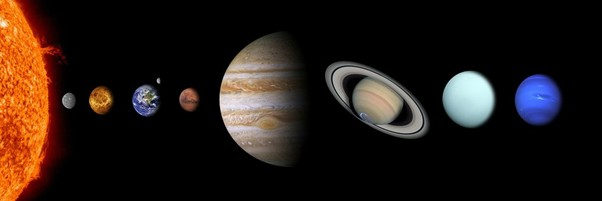
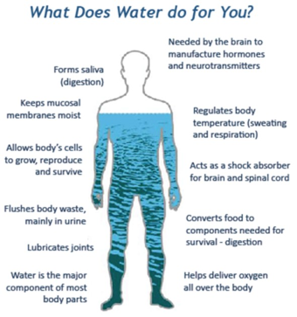
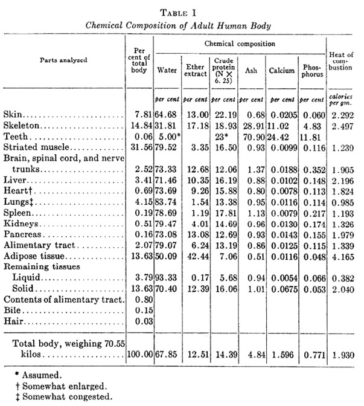

 Le fait que l’eau est un aspect essentiel de nos vies, c’est certain. Mais est-ce vraiment si essentiel pour notre survie, ou est-ce seulement quelque chose qui occupe notre ordre du jour, et un sujet seulement inventé comme thème pour les magasins scientifiques hebdomadaires ?

Réponse courte, non. L’eau et sa conservation sont définitivement des sujets qui nous concernent tous. Et
seulement parler n’est plus effectif. Il faut prendre action le plus rapidement possible. Mais comment faire
? Fermer le robinet lorsqu'on brosse les dents, est-ce vraiment suffisant ?
Pourquoi cherche-t-on la présence de l’eau hors de notre monde ? C’est simplement parce qu’on essaie de découvrir des autres êtres vivants extraterrestres. À nos jours, les “aliens” appelés “extraterrestres” en français, n’est plus une fantaisie qu’on voit dans les films de science-fiction, mais un vrai sujet d’étude pour les astronomes.
“Nous n'avons pas encore découvert la vie sur aucune autre planète, et nous n’avons pas vu aucune preuve scientifiquement étayée de la vie extraterrestre.” [1]
Donc, pas de panique. On n’a pas encore rencontré des extraterrestres qui veulent nous dévorer.
“Il y a des lunes glacées dans le système solaire externe comme la lune Encelade de Saturne et la lune Europa de Jupiter qui semblent avoir des océans souterrains qui pourraient être habitables.” [1]
Comme expert d’astrobiologie Dr. Lindsay Hays a dit ci-dessus, l’eau est un guide important pour trouver la vie hors de notre planète maison.
Bien sûr, l’eau n’est pas seulement nécessaire pour la vie extraterrestre, mais aussi la vie habituelle sur Terre. Une personne, les chats aussi [3], ne peuvent survivre que 3 jours sans aucune goutte d’eau. [2]
 L'eau joue de nombreux rôles importants dans le corps, notamment la régulation de la température corporelle, l’excursion des déchets du corps et le transport des nutriments nécessaires pour la digestion. [4] C’est pourquoi on l’appelle “essentiel”. Pour mieux hydrater le corps, il faut choisir de boire l’eau, au lieu des autres boissons, comme c’est le meilleur choix pour tous mentionné ci-dessus.
Jusqu’à 90% de la masse corporelle de quelques organismes consiste de l’eau seule. Et d’après plusieurs recherches, environ 60% du corps humain est de l’eau. 83% de nos poumons, 79% de nos reins, et 73% de notre cerveau et cœur est simplement H2O* : l’eau. [15] (tableau ci-dessous : [14])
* L’eau dont on parle dans le corps humain, n’est pas complètement l’eau pure (H2O), comme elle contient tant des minéraux et d’autres substances.